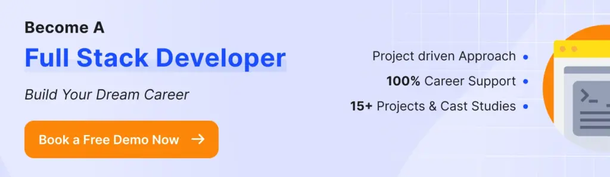

Preparing for a web development interview can feel like going through a maze of technologies and concepts. Whether you're a fresher or an experienced developer, knowing the top web development interview questions that will come your way is crucial to landing your next role.
Hence, we have covered this detailed guide covering a comprehensive collection of website development interview questions for both front-end and back-end positions. From the basics of HTML, CSS, and JavaScript to the complexities of performance optimization and problem-solving, we've got you covered.
So, let’s begin with the web development interview questions and answers.
Types of Web Developers
Professionals in this field specialize in different types of web development:
1. Front-end Developer
Front-end developers focus on the client-side of web applications. They design and develop the visual aspects of websites and applications, ensuring a seamless and engaging user experience.
Their toolkit primarily includes HTML, CSS, and JavaScript, along with frameworks and libraries like React, Angular, and Vue.js. The goal of a Front-end developer is to create interactive and visually appealing interfaces that operate smoothly across different devices and browsers.
You can become proficient in this type of development by joining the online front-end development course.
2. Back-end Developer
Back-end developers work on the server-side, dealing with databases, server logic, and application integration. They handle data storage, security, and data processing, ensuring that the front-end has the necessary data to present.
Backend programming languages commonly used are Python, Ruby, Java, PHP, and Node.js, alongside frameworks such as Django, Ruby on Rails, and Express. Their work is crucial for the functionality and performance of web applications, focusing on algorithms, database management, and architecture design.
3. Full-stack Developer
Full-stack developers are the Swiss Army knives of web development. They have the skills to work on both the front-end and back-end, providing a comprehensive approach to building web applications.
Full-stack developers understand how the web works at every level, including setting up and managing servers, creating user-facing websites, and working with clients during the planning phase of projects. They are proficient in multiple languages and frameworks, making them versatile and capable of handling various aspects of development projects.
You can grab high-paying opportunities in this field by upskilling with the online full stack development course.
Recommended Professional Certificates
Full Stack Development Course with AI Engineering
WordPress Bootcamp
Front-end Web Development Interview Questions
Below is a list of interview questions for web development for those applying for front-end developer positions. These questions cover a range of topics, from basic HTML, CSS, and JavaScript concepts to more nuanced questions about responsive design and performance optimization.
1. What is HTML? Explain the basic structure of an HTML document.
HTML (HyperText Markup Language) is the standard markup language used to create and design web pages and web applications. By defining the structure and layout of a webpage, HTML enables the inclusion of text, images, links, and other elements through the use of tags and attributes.
The basic structure of an HTML document includes several key components that are essential for the browser to correctly display the webpage:
<!DOCTYPE html>
<html>
<head>
<title>Page Title</title>
<!-- Meta tags, CSS links, and JavaScript files are typically included here -->
</head>
<body>
<!-- The content of the webpage, such as paragraphs, images, links, etc., goes here -->
</body>
</html>- <!DOCTYPE html>: Declares the document type and version of HTML.
- <html>: The root element that encompasses all other HTML elements in the document.
- <head>: Contains meta-information about the document, including the title (displayed in the browser's title bar or tab), links to stylesheets, and scripts.
- <title>: Sets the title of the webpage, which appears in the browser's title bar or tab.
- <body>: Houses the content of the webpage, such as text, images, buttons, and other elements visible to the user.
It is one of the basic web development interview questions asked to freshers and beginners.
2. What are semantic HTML elements? Provide examples and explain their importance.
Semantic HTML elements clearly describe their meaning to both the browser and the developer. Unlike non-semantic elements (<div> and <span>), which convey no information about their content, semantic elements like <header>, <footer>, <article>, and <section> define the structure and layout of web pages in a meaningful way.
Their use enhances web accessibility, making it easier for screen readers and search engines to understand the content structure. For example, <nav> indicates navigation links, <article> wraps independent, self-contained content, and <aside> is used for tangentially related content. Employing semantic elements is crucial for SEO, accessibility, and maintaining clean, readable code.
It is among the common web development interview questions for freshers.
3. How do you use HTML5 to structure a web page?
Using HTML5 to structure a web page involves using semantic elements to define different parts of a web page, making the content more accessible and understandable.
Key HTML5 elements include:
- <header> for the introductory content or navigation links.
- <nav> for navigation links.
- <section> for sections of content.
- <article> for independent, self-contained content.
- <aside> for sidebar content, related to the main content.
- <footer> for the footer content, often including copyright and contact information.
Also Read: How to Learn Coding & Programming? Best Ways
4. Can you explain the difference between <span> and <div>?
<span> and <div> are both generic HTML elements used to group content, but they differ in how they display that content.
<div> is a block-level element, meaning it starts on a new line and stretches out to fill the available width, creating a "block." <span>.
On the other hand, is an inline element that does not start on a new line and only takes up as much width as necessary.
Example:
<div>This is a div element, taking up the full width.</div>
<span>This is a span element,</span> <span>inline with text.</span>5. What are data-attributes in HTML? Provide examples of how you might use them.
Data attributes in HTML (data-*) allow you to store extra information on standard HTML elements, without affecting the presentation or behavior. They are used to provide elements with unique identifiers, store information for later use by JavaScript, or for other custom functionalities not covered by standard attributes.
Example:
<div id="post" data-user-id="123" data-post-type="article">
<!-- Content here -->
</div>In this example, data-user-id could be used by JavaScript to fetch more information about the user, and data-post-type could indicate how the post should be handled or displayed by scripts.

6. What is CSS and how is it used in web development?
CSS (Cascading Style Sheets) is a stylesheet language used in web development to describe the presentation of a document written in HTML or XML (including XML dialects such as SVG). CSS defines how elements should be displayed on screen, on paper, in speech, or on other media.
It enables developers to control the layout, colors, fonts, and overall visual aspect of web pages, separating content (HTML) from presentation. By using CSS, developers can ensure consistent styling across multiple web pages, improve content accessibility, and customize user experiences based on device, screen size, and other factors, enhancing the usability and aesthetic appeal of websites.
It is among the top interview questions in web development jobs, especially for freshers.
7. Explain the box model in CSS.
The CSS box model is a fundamental concept in web design and development, describing how HTML elements are represented as rectangular boxes. Each box consists of four areas: content, padding, border, and margin.
- Content: The area where text and images appear.
- Padding: Space between the content and the border, inside the element.
- Border: Surrounds the padding (if any) and content.
- Margin: Outermost layer, space between the border of one element and another.
8. Can you describe the difference between classes and IDs in CSS?
In CSS, classes and IDs are selectors used to apply styles to HTML elements, but they differ in specificity and usage.
- Classes are reusable and can be applied to multiple elements. They are denoted by a dot . prefix.
Example: .button { color: blue; } can be used on any element to apply blue color to the text.
- IDs are unique and should be used on a single element within a page. They are denoted by a hash # prefix.
Example: #header { background-color: grey; } targets the element with the ID header to set its background color to grey.
9. What are CSS preprocessors? Give examples.
CSS preprocessors are scripting languages that extend the default capabilities of CSS. They allow developers to use variables, functions, mixins, and other advanced features to write CSS in a more manageable and maintainable way. These scripts are then compiled into standard CSS files that browsers can interpret.
Examples of popular CSS preprocessors include:
- Sass (Syntactically Awesome Stylesheets): Uses the .scss or .sass file extension.
- LESS (Leaner Style Sheets): Uses the .less file extension.
- Stylus: Uses the .styl file extension.
Also Read: Is Web Development a Good Career?
10. What is JavaScript and why is it important for web development?
JavaScript is a programming language that enables interactive and dynamic content on web pages. It's crucial for web development because it allows developers to add a wide range of interactive features, such as animations, form validations, asynchronous data fetching, and handling user actions in real-time.
Unlike HTML and CSS, which provide structure and style to web pages, JavaScript introduces behavior, making web pages responsive and interactive. Its importance is underscored by its widespread support across all modern web browsers, enabling developers to create rich, engaging user experiences and complex web applications that work seamlessly across different platforms and devices.
11. Explain variables, data types, and arrays in JavaScript.
In JavaScript, variables are used to store data values. They can be declared using var, let, or const, with let and const being preferred in modern JavaScript for block-level scoping.
JavaScript supports several data types, broadly categorized into two types: primitive and object types. Primitive types include undefined, null, boolean, number, string, symbol (introduced in ES6), and bigint (for large numbers). Object types are used to store collections of data or more complex entities; arrays and functions are examples of object types.
Arrays are a type of object used for storing multiple values in a single variable. They are zero-indexed, meaning the first element is accessed with an index of 0. Arrays can hold elements of any data type, and their size is dynamically adjusted as elements are added or removed.
let fruits = ["apple", "banana", "cherry"]; // An array of strings12. What are functions in JavaScript? Provide examples.
Functions in JavaScript are reusable blocks of code designed to perform a specific task. Functions are defined with the function keyword, followed by a name, a set of parentheses () that can contain parameters, and a block of code {} to be executed when the function is called.
Example of a simple function:
function greet(name) {
console.log("Hello, " + name + "!");
}
greet("Alice"); // Calls the function with "Alice" as an argument, prints "Hello, Alice!"Functions can take parameters, return values, and be stored in variables. They are fundamental for structuring and organizing JavaScript code, making it more modular, reusable, and maintainable.
13. What is the DOM and how do you interact with it using JavaScript?
The Document Object Model (DOM) is a programming interface for web documents. It represents the page so that programs can change the document structure, style, and content. The DOM represents the document as a tree of objects; each object corresponds to a part of the document's structure.
JavaScript interacts with the DOM to dynamically change the content, structure, and style of a webpage. This is done using methods like document.getElementById(), document.createElement(), parentNode.appendChild(), and many others.
For example, to change the text of an element:
document.getElementById("demo").textContent = "Hello, DOM!";This allows web pages to respond to user actions, making them interactive and dynamic.
14. What is jQuery and how does it differ from JavaScript?
jQuery is a fast, small, and feature-rich JavaScript library designed to simplify the client-side scripting of HTML. It provides an easy-to-use API that works across a multitude of browsers, abstracting complex tasks like AJAX calls, DOM manipulation, and event handling into simpler, more concise code.
jQuery allows developers to write less code to achieve more functionality compared to writing pure JavaScript.
The key difference between jQuery and JavaScript is that jQuery is a library built with JavaScript to provide a simplified syntax for common JavaScript tasks. While JavaScript is the underlying programming language used to create interactive effects and complex features on web pages, jQuery is a tool that helps streamline and simplify the use of JavaScript.
Therefore, jQuery cannot exist without JavaScript, but you can use JavaScript without jQuery. jQuery's "write less, do more" philosophy aims to make web development more accessible and efficient.
15. How do you handle events in jQuery? Provide an example.
Events in jQuery are handled using various methods that bind an event to an element(s) and specify a function to execute when the event occurs. The most common method is .on(), which attaches one or more event handlers for the selected elements and specifies a function to run when the event occurs.
Example:
<button id="clickMe">Click me</button>
<script src="https://ajax.googleapis.com/ajax/libs/jquery/3.5.1/jquery.min.js"></script>
<script>
$(document).ready(function(){
$("#clickMe").on("click", function(){
alert("Button clicked!");
});
});
</script>In this example, the .on() method is used to attach a click event to a button with the ID clickMe. When the button is clicked, it triggers a function that displays an alert message. This demonstrates how jQuery can be used to easily add interactive behavior to web elements.
Also Read: Web Development Tools: 30 Best Picks
16. What is responsive web design? How do you implement it?
Responsive web design (RWD) is an approach to web design aimed at crafting sites to provide an optimal viewing and interaction experience—easy reading and navigation with a minimum of resizing, panning, and scrolling—across a wide range of devices (from desktop computer monitors to mobile phones).
To implement responsive design, web developers use a mix of flexible grids and layouts, images, and intelligent use of CSS media queries. Here’s a basic example of using a media query:
@media screen and (max-width: 600px) {
body {
background-color: lightblue;
}
}This CSS code changes the background color of the page when the browser window is 600 pixels wide or less. It's a simple illustration of how CSS media queries can adjust the styling of elements based on the conditions of the device viewport, ensuring the web content is responsive to different screen sizes.
It is a common interview question on web development for both freshers and experienced professionals.
17. What are media queries? Provide examples of how they are used.
Media queries are a feature of CSS that allows content to adapt to different conditions such as screen size, resolution, and orientation. They enable developers to apply styles conditionally based on the device's characteristics, making it a cornerstone of responsive web design.
Example:
@media (min-width: 768px) {
.container {
width: 750px;
}
}
@media (min-width: 992px) {
.container {
width: 970px;
}
}
@media (min-width: 1200px) {
.container {
width: 1170px;
}
}This code snippet shows how media queries can adjust the width of a .container class based on the screen width, ensuring the layout is responsive and looks good on devices ranging from tablets to large desktops.
Upcoming Masterclass
Attend our live classes led by experienced and desiccated instructors of Wscube Tech.


18. What is web accessibility? Why is it important?
Web accessibility means the design and creation of websites and online resources that are usable by everyone, including people with disabilities. This encompasses all disabilities that affect access to the Web, such as auditory, cognitive, neurological, physical, speech, and visual impairments.
It's important because it ensures equal access and opportunities to everyone, fulfilling ethical and legal obligations. Making web content accessible boosts its reach to a wider audience, including those using mobile devices or facing temporary disabilities (like a broken arm). Additionally, accessibility practices often improve the overall user experience and search engine optimization (SEO) of websites.
19. What steps would you take to optimize a website's performance?
Optimizing a website's performance involves several key steps aimed at improving page load times, enhancing user experience, and potentially boosting search engine rankings.
- Minimize HTTP Requests: Reduce the number of elements on a page to lower the number of HTTP requests required to render the page.
- Enable Compression: Use tools like Gzip to compress files, reducing the size of CSS, JavaScript, and HTML files.
- Minify and Combine Files: Minify CSS, JavaScript, and HTML to eliminate unnecessary characters without changing functionality. Combine files where possible to reduce requests.
- Use Asynchronous Loading: Load JavaScript and CSS files asynchronously to prevent them from blocking the rendering of the page.
- Optimize Images: Ensure images are appropriately sized and compressed for the web without compromising quality.
- Use Browser Caching: Make web pages load faster for repeat visitors by storing elements of your site in the user’s browser cache.
- Implement a Content Delivery Network (CDN): Distribute content closer to users to decrease loading times.
- Optimize CSS Delivery and Prioritize Above-the-Fold Content: Ensure critical CSS is loaded first to speed up rendering time for content seen by users upon page load.
20. How do you debug JavaScript code?
Debugging JavaScript code can be efficiently performed using various techniques and tools, with the most common being the use of browser developer tools available in modern web browsers like Chrome, Firefox, and Edge. Here’s a simple guide:
- Console Logs: Insert console.log() statements in your code to output values and debug messages to the browser's console, helping identify values of variables or whether a part of the code is executed.
- Breakpoints: Set breakpoints in the browser's developer tools to pause the execution of your JavaScript code at specific points. This allows you to inspect the values of variables, the call stack, and execute code step by step.
- Debugger Statement: Use the debugger; statement in your code to act as a breakpoint, causing the execution to pause when the developer tools are open.
- Watch Expressions: Use watch expressions in developer tools to monitor the values of specific variables or expressions as your code runs.
- Network Tab: Inspect the Network tab in developer tools to debug issues related to AJAX requests, loading resources, or performance bottlenecks.
- Performance Profiling: Use the Performance tab to record and analyze runtime performance to identify slow-running code or performance hits.
Also Read: Web Design vs Web Development: What’s the Difference?
21. What are Promises and async/await in JavaScript? How do they improve working with asynchronous operations?
Promises and async/await in JavaScript are features that simplify working with asynchronous operations, such as fetching data from a server. A Promise is an object representing the eventual completion or failure of an asynchronous operation. It allows you to write cleaner code by attaching callbacks, rather than nesting them.
The async/await syntax is syntactic sugar built on top of Promises. It allows you to write asynchronous code that looks and behaves like synchronous code. By prefixing a function with async, you can use await within it to pause execution until a Promise is resolved, improving readability and making error handling easier with try/catch blocks. These features enhance code clarity and debugging for asynchronous operations.
22. Explain the concept of 'this' keyword in JavaScript. How does its value change in different contexts?
In JavaScript, the this keyword refers to the object it belongs to, acting as a context pointer. Its value changes based on how a function is called:
- Global Context: In the global execution context (outside of any function), this refers to the global object (window in browsers, global in Node.js).
- Function Context: Inside a regular function, this depends on how the function was called. If called as a method of an object, this refers to that object. Otherwise, this refers to the global object or undefined in strict mode.
- Arrow Functions: Arrow functions do not have their own this. They inherit this from the parent scope at the time they are defined.
- Constructor Context: In a constructor function, this refers to the newly created object instance.
23. What are JavaScript modules? Discuss the benefits over traditional scripts.
JavaScript modules are files containing reusable code, which can be exported and imported into other modules or scripts using the import and export syntax. This modular approach to structuring JavaScript code brings several benefits over traditional, monolithic scripts:
- Namespace Management: Modules help in avoiding global namespace pollution by encapsulating code within a local scope, reducing name conflicts.
- Reusability: Functions, classes, or variables defined in a module can be reused across different parts of an application, promoting DRY (Don't Repeat Yourself) principles.
- Maintainability: Breaking down code into smaller, functional modules makes it easier to maintain, understand, and debug.
- Dependency Management: The import and export statements make dependencies explicit, allowing developers to easily track and manage them.
- Improved Performance: Modern JavaScript engines and build tools can optimize module loading, such as tree shaking to eliminate unused code, and lazy loading modules only when needed, enhancing web application performance.
24. Explain the virtual DOM. How does React utilize it to enhance performance?
The Virtual DOM is a concept employed by libraries like React to improve web application performance and efficiency. It's a lightweight, in-memory representation of the actual DOM (Document Object Model).
When the state of an object changes, React first updates the Virtual DOM, then compares the updated Virtual DOM with a pre-update version using a diffing algorithm. This process, known as reconciliation, identifies the minimal set of changes needed to update the actual DOM.
React enhances performance through this mechanism by minimizing direct manipulations of the actual DOM, which is costly in terms of performance. By batching updates and only applying the necessary changes, React reduces the amount of work required to update the DOM, leading to faster and smoother UI updates.
This approach significantly improves the user experience, especially in complex applications with frequent UI changes.
25. What are the benefits of server-side rendering (SSR) in JavaScript frameworks?
Server-Side Rendering (SSR) in JavaScript frameworks offers several benefits, especially for web applications aiming for better performance, SEO, and user experience:
- Improved SEO: SSR ensures that search engine crawlers can fully render pages, making the content more indexable and improving the site's visibility in search results.
- Faster First Paint: By sending a fully rendered page from the server, users see the content immediately without waiting for all JavaScript to be downloaded and executed, enhancing perceived performance.
- Better Initial Page Load: SSR can significantly reduce the time to first contentful paint, crucial for user retention and engagement, especially on slow network conditions.
- Social Media Sharing: When sharing URLs on social media, SSR ensures that metadata (like images, titles, and descriptions) is correctly displayed, as the content is pre-rendered on the server.
- Compatibility: SSR can help ensure compatibility with older browsers or devices that might have limited JavaScript support.
26. Discuss the advantages of using CSS preprocessors (e.g., SASS, LESS). Provide examples of features not available in standard CSS.
CSS preprocessors, such as Sass, LESS, and Stylus, extend CSS with features not available in standard CSS, making development more efficient, maintainable, and scalable.
Advantages include:
- Variables: They allow you to store and reuse values (e.g., colors, font sizes). For example, $primaryColor: #333; in Sass can be used throughout the stylesheet.
- Mixins: Functions that let you reuse whole chunks of CSS, potentially with variations. For example, a mixin for cross-browser border-radius.
- Nesting: CSS selectors can be nested within one another, mirroring the HTML structure for easier readability.
- Partials and Import: Allows splitting CSS into smaller files (partials) for better organization, which can then be imported into a main file.
- Mathematical Operations and Functions: Perform calculations directly in stylesheets for dynamic sizing and spacing.
27. How do you ensure code quality and maintainability in your front-end projects?
Ensuring code quality and maintainability in front-end projects involves a combination of best practices, tools, and methodologies designed to produce clean, efficient, and scalable code.
These are key strategies:
- Code Reviews: Implement peer code reviews to identify issues, share knowledge, and maintain consistency across the codebase.
- Coding Standards and Style Guides: Adopt and enforce coding standards and style guides (e.g., Airbnb's JavaScript style guide) to ensure consistency and readability.
- Modular Architecture: Structure code into reusable modules or components to reduce redundancy and improve maintainability.
- Automated Testing: Utilize unit tests, integration tests, and end-to-end tests with frameworks like Jest, Mocha, or Cypress to catch bugs early and ensure feature integrity over time.
- Continuous Integration/Continuous Deployment (CI/CD): Implement CI/CD pipelines to automate testing and deployment processes, ensuring that code is reliably built, tested, and deployed.
- Linting and Formatting Tools: Use tools like ESLint and Prettier to automatically enforce coding standards and format code, preventing common errors and ensuring consistency.
- Documentation: Maintain up-to-date documentation for codebases and APIs to facilitate understanding and collaboration among developers.
- Performance Optimization: Regularly profile performance and optimize code, reducing bloat and improving user experience.
Back-end Web Development Interview Questions
Interview questions for back-end developers cover a wide range of topics, from specific programming languages and databases to system architecture and design patterns.
28. How do you manage dependencies in your projects?
Managing dependencies in projects effectively includes using package managers, maintaining clear documentation, and adhering to best practices for version control. Tools like npm for Node.js or Composer for PHP allow you to specify and lock down specific versions of libraries and frameworks your project depends on in a package.json or composer.json file.
Using a lock file (e.g., package-lock.json or composer.lock) ensures that all team members and deployment environments use the exact same versions, reducing "works on my machine" problems.
Regularly auditing dependencies for updates or vulnerabilities with these tools helps keep the project secure and up-to-date. Additionally, clear documentation of why each dependency is needed and how it's used guides maintenance and future development.
29. How do you ensure your code is secure and resilient against common vulnerabilities like SQL injection and XSS (Cross-Site Scripting)?
Ensuring code security and resilience against common vulnerabilities involves adopting several best practices and defensive programming techniques:
- Validate Input: Rigorously validate user inputs on both client-side and server-side to prevent malicious data from being processed.
- Sanitize Data: Use libraries or built-in functions to sanitize data, removing harmful characters before using it in queries or displaying it on the page.
- Use Prepared Statements (Parameterized Queries): For SQL injection prevention, use prepared statements with parameterized queries to separate SQL logic from data.
- Use Content Security Policy (CSP): Implement CSP headers to reduce the risk of XSS by specifying which dynamic resources are allowed to load.
- Escape Output: When displaying user input or data from external sources, ensure it's escaped properly to prevent execution of unintended HTML or JavaScript.
- Regularly Update Dependencies: Keep all frameworks, libraries, and packages updated to mitigate vulnerabilities that have been discovered and fixed.
Web Development Project Ideas for Practice
| Web Development Project Ideas | HTML Project Ideas |
| Frontend Development Project Ideas | Backend Project Ideas |
| JavaScript Project Ideas | Full Stack Project Ideas |
- Use Authentication and Authorization Best Practices: Implement strong authentication mechanisms and ensure that users can only access resources they are permitted to.
30. What is RESTful API design?
RESTful API design refers to the architectural style of designing networked applications based on representational state transfer (REST) principles. It leverages standard HTTP methods like GET, POST, PUT, and DELETE to operate on resources, represented typically in formats such as JSON or XML.
Each resource is identified by a stable URI (Uniform Resource Identifier) and is manipulated using stateless operations. The design philosophy of REST emphasizes simplicity, scalability, and statelessness, with each API call being independent and carrying all necessary information to complete the request.
This approach enables seamless interaction between client and server, making RESTful APIs a popular choice for web services development.
Also Read: How to Become a Web Developer? Step-by-Step Guide
31. Explain the differences between SOAP and REST APIs.
The difference between SOAP and REST APIs include:
| Feature | SOAP (Simple Object Access Protocol) | REST (Representational State Transfer) |
| Protocol | Strictly HTTP | Can use HTTP, HTTPS, SMTP, and more |
| Standards | Protocol with well-defined standards like WS-Security for security | No official standard; uses web standards like HTTP, URL, JSON, XML |
| Data Format | Primarily uses XML for message format | Can use XML, JSON, YAML, and more |
| Design | Function-driven (actions are predefined operations) | Resource-driven (focuses on resources and their manipulation via HTTP verbs) |
| Statefulness | Can support stateful operations | Stateless by design (each call from client to server contains all necessary information) |
| Error Handling | Provides detailed error handling through fault elements in the SOAP envelope | Relies on HTTP status codes for error indication |
| Security | WS-Security, providing built-in standards for message integrity and confidentiality | Uses web standard security measures (HTTPS, OAuth, JWT) |
| Use Cases | Preferred for enterprise-level web services, requiring high security and complex transactions | Suited for more straightforward, stateless CRUD (Create, Read, Update, Delete) operations on web resources |
32. Explain the difference between SQL and NoSQL databases. When would you choose one over the other?
The differences between SQL and NoSQL databases include:
| Feature | SQL Databases | NoSQL Databases |
| Type | Relational Database Management Systems (RDBMS) | Non-relational or distributed database system |
| Schema | Fixed schema; requires predefined schema and tables | Dynamic schema for unstructured data |
| Scalability | Vertically scalable (increase server capacity) | Horizontally scalable (add more servers) |
| Data Storage | Tabular form | Key-value pairs, document-oriented, graph databases, or wide-column stores |
| Transactions | ACID properties (Atomicity, Consistency, Isolation, Durability) for reliable transactions | BASE properties (Basically Available, Soft state, Eventual consistency) less strict than ACID |
| Query Complexity | Complex queries using SQL | Queries are focused on collection of documents and can vary by database type |
| Use Cases | Well-suited for complex queries and transactions, relationships between data | Suited for large sets of distributed data, rapid development with evolving data models, scalability |
| Examples | MySQL, PostgreSQL, Oracle, SQL Server | MongoDB, Cassandra, Couchbase, DynamoDB |
When to Choose SQL:
- When you need complex transactions and relational data integrity.
- For applications requiring strict schema adherence.
- In scenarios where ACID compliance is critical for data consistency.
When to Choose NoSQL:
- When dealing with large volumes of data that doesn't fit well in tabular forms.
- For projects requiring rapid development and iterations where the schema may frequently change.
- When the application demands high throughput and scalability across distributed systems.
33. How do you handle database migrations?
Handling database migrations involves managing changes to a database schema and adapting existing data to fit those changes.
We can follow this streamlined approach:
- Use Migration Scripts: Write scripts for every database schema change (e.g., adding tables, columns, or indexes). Each script should be idempotent, allowing it to run multiple times without causing errors.
- Version Control: Maintain these scripts in version control alongside your application code to keep track of database changes over time.
- Automated Migration Tools: Utilize tools like Flyway, Liquibase, or framework-specific solutions (e.g., Django's migrations, Rails Active Record Migrations) to automate the application of migrations in the correct order.
- Test Migrations: Apply migrations in a development or staging environment before deploying them to production to catch any potential issues.
- Backup Before Migrations: Always backup your database before applying migrations to production to prevent data loss in case of errors.
- Monitor and Review: After applying migrations, monitor the application and database performance to ensure no adverse effects occur.
34. How do you optimize queries in a relational database?
Optimizing queries in a relational database involves several strategies to improve performance:
- Indexing: Create indexes on columns that are frequently used in WHERE clauses, JOIN conditions, or as part of an ORDER BY to speed up data retrieval.
- Select Specific Columns: Avoid using SELECT *; instead, specify only the columns needed.
- Use Joins Instead of Subqueries: Whenever possible, use joins instead of subqueries as they are generally more efficient.
- Limit Results: Use LIMIT to retrieve only a subset of records when you don't need all rows.
- Query Analysis: Use the database's query analysis tool (e.g., EXPLAIN in MySQL) to understand how a query is executed and identify bottlenecks.
- Avoid Functions on Indexed Columns in WHERE Clause: Applying functions can prevent the use of indexes.
- Normalize Data: Ensure the database design is normalized to reduce data redundancy and improve query efficiency.
35. Explain indexing in databases. How does it improve performance?
Indexing in databases is the process of creating a data structure (an index) to improve the speed of data retrieval operations on a database table at the cost of additional writes and storage space to maintain the index data structure.
Indexes allow databases to find and access data without scanning every row in a table, significantly reducing the amount of data read from disk and speeding up query execution.
For example, an index on a column used in a WHERE clause can help the database engine quickly locate the rows that match the query criteria, similar to how an index in a book helps you find specific information without reading every page.
36. Explain how caching works. What are the different types of caching mechanisms you might use?
Caching is a technique used to store copies of frequently accessed or computationally expensive data temporarily in a faster, closer, and more accessible location.
When a request is made for the same data again, it can be quickly retrieved from the cache instead of going through the original, slower process of fetching or computing it again.
Different types of caching mechanisms include:
- Browser Caching: Stores resources like images, stylesheets, and scripts locally on the user's device to speed up subsequent page loads.
- Server-Side Caching: Caches data on the server side to reduce database queries or expensive computations. Techniques include in-memory caching (e.g., Redis), file-based caching, and database query caching.
- Content Delivery Network (CDN) Caching: Stores copies of website content on servers distributed across multiple geographic locations to reduce latency and improve content delivery speed globally.
- Database Caching: Utilizes database-specific caching mechanisms like query caching or result caching to store frequently accessed data in memory for faster retrieval.
37. How do you approach designing a new system or feature?
When designing a new system or feature, I follow these steps:
- Understand Requirements: Gather and analyze requirements to define the problem and desired outcomes.
- Research: Investigate existing solutions, technologies, and best practices relevant to the problem domain.
- Design: Create a high-level architecture and outline key components, data flow, and interactions.
- Prototype: Build a prototype or proof of concept to validate design decisions and identify potential challenges.
- Iterate: Gather feedback, iterate on the design, and refine it based on user needs, technical feasibility, and business objectives.
38. How do you monitor and log your applications? Discuss the tools and methodologies you use.
To monitor and log applications, I employ tools like Prometheus for metrics collection, Grafana for visualization, and ELK stack (Elasticsearch, Logstash, Kibana) for logging. I set up alerts with Prometheus Alertmanager to notify of anomalies.
Additionally, I integrate application-level logging with structured logging libraries like Winston or Serilog, sending logs to centralized logging systems such as Elasticsearch or Splunk. Finally, I use APM (Application Performance Monitoring) tools like New Relic or Datadog to track application performance and diagnose issues.
39. Discuss the Agile development process and how you have implemented it in your projects.
The Agile development process is an iterative approach to software development that prioritizes collaboration, flexibility, and customer feedback. It involves breaking down projects into smaller, manageable tasks called user stories, which are developed and delivered incrementally in short cycles called sprints.
Key principles include continuous delivery, self-organizing teams, and adaptability to changing requirements.
In my projects, I've implemented Agile methodologies such as Scrum or Kanban to promote transparency, communication, and rapid iteration. We hold regular sprint planning, review, and retrospective meetings to track progress, gather feedback, and make adjustments.
By prioritizing user stories based on value and complexity, we ensure that the most critical features are delivered first. Additionally, we use tools like Jira or Trello for project management and collaboration, enabling seamless communication and task tracking across distributed teams.
40. How do you manage dependencies and environment-specific configurations in your projects?
To manage dependencies, I utilize package managers like npm for Node.js or Composer for PHP, specifying dependencies and their versions in a package.json or composer.json file.
For environment-specific configurations, I use environment variables or configuration files, ensuring separate configurations for development, staging, and production environments. Tools like dotenv for Node.js or Laravel's .env file simplify managing environment-specific settings.
Additionally, I use Docker for containerization, allowing consistent deployment across different environments while encapsulating dependencies and configurations within containers.
Also Read: What is Full Stack Development? An Ultimate Guide
41. How do you communicate complex technical issues to non-technical team members?
To communicate complex technical issues to non-technical team members, I break down concepts into simpler terms, avoiding jargon, and using analogies or real-world examples to illustrate points.
I focus on the impact and relevance of the issue, explaining how it affects project goals or user experience. Visual aids like diagrams or screenshots can also help convey information effectively. Lastly, I encourage questions and feedback, ensuring everyone understands the issue and its implications for decision-making.
Web Developer Interview Questions on Popular Frameworks and Libraries
Specific job roles require expertise in core frameworks and libraries. Hence, you need to be prepared for interview questions on web development related to frameworks and libraries.
42. What are the key features of ReactJS?
Key features of ReactJS include:
- Component-Based Architecture: React uses a modular, component-based approach for building user interfaces, promoting reusability and maintainability.
- Virtual DOM: React's virtual DOM efficiently updates the UI by only rendering the components that have changed, improving performance and responsiveness.
- JSX: JSX is a syntax extension that allows embedding HTML-like syntax directly into JavaScript code, making it easier to write and understand UI components.
- Unidirectional Data Flow: React enforces a unidirectional data flow, making it easier to understand how data changes affect the UI and improving predictability.
- React Hooks: Introduced in React 16.8, hooks allow functional components to use state and lifecycle methods, reducing the need for class components and simplifying component logic.
- Declarative: React allows developers to describe the desired UI state, and React handles the underlying DOM updates, making code more predictable and easier to debug.
43. How do you manage state in a React application?
In a React application, state management is generally handled using React's built-in useState hook for functional components or setState method for class components.
State represents the data that can change over time and influences the rendering of UI components. State can be managed locally within a component or lifted up to a higher-level component for sharing data between multiple components.
Additionally, complex state management requirements may benefit from using state management libraries like Redux or Context API for global state management.
44. What are React Hooks? Give examples of some common hooks and their uses.
React Hooks are functions that enable functional components to use state and other React features without writing a class.
Common hooks include:
- useState: Manages state in functional components.
const [count, setCount] = useState(0);- useEffect: Performs side effects in functional components (e.g., data fetching, subscriptions).
useEffect(() => {
document.title = `You clicked ${count} times`;
}, [count]);- useContext: Accesses the value of a React context.
const theme = useContext(ThemeContext);- useRef: Creates a mutable ref object to persist values between renders.
const inputRef = useRef(null);More Web Development Blog Topics to Read
| Best Programming Languages | Backend Programming Languages |
| Types of Web Development | Web Development Tools |
| Web Development Frameworks | Programming Languages Types |
45. How do you handle side effects in React components?
In React components, side effects are handled using the useEffect hook. This hook allows you to perform side effects in functional components by executing code after rendering. Common side effects include data fetching, subscriptions, and DOM manipulation.
The useEffect hook takes a function as its first argument, which contains the code to execute, and an optional second argument array to specify dependencies. The hook runs the effect after every render unless specified otherwise. This ensures side effects are properly managed and executed in React components.
46. What is the Context API and how is it used?
The Context API is a feature in React that provides a way to pass data through the component tree without having to pass props down manually at every level. It allows components to share data without having to explicitly pass props through each level of the tree.
The Context API consists of two main parts: the Provider component and the Consumer component.
The Provider component allows you to define the data that you want to share, while the Consumer component allows you to consume that data within any component in the tree that is wrapped by the Provider.
47. How do you implement form handling in React?
Form handling in React involves managing form state and handling user input.
Below is a simple approach:
- Define state variables to store form data.
- Attach event handlers to form elements (e.g., onChange for input fields).
- Update state with user input using event.target.value.
- Handle form submission with onSubmit event.
- Prevent default behavior to avoid page reload.
- Use state variables to submit form data or perform validation.
- Optionally, implement form validation with additional logic.
By managing form state in React components, you can create dynamic and interactive forms that respond to user input effectively.
48. What are the core concepts of Angular?
The core concepts of Angular include:
- Components: Angular applications are built using components, which are self-contained units of UI with their own HTML templates, CSS styles, and TypeScript code.
- Modules: Angular applications are modularized into separate modules, each encapsulating related components, services, and other features.
- Templates and Data Binding: Angular provides powerful data binding features that allow you to bind data between the component class and its template, enabling dynamic rendering of UI elements.
- Dependency Injection: Angular's dependency injection system allows you to inject dependencies into components, services, and other objects, promoting modularity, testability, and reusability.
- Services: Services are reusable components that provide functionality across the application, such as data fetching, authentication, and logging.
- Routing: Angular's built-in router enables navigation between different views or components based on the URL, supporting single-page application (SPA) development.
49. Explain Angular's component lifecycle.
Angular's component lifecycle consists of several stages:
- ngOnChanges: Called when the input properties of the component change.
- ngOnInit: Called once after the component is initialized and its input properties are set.
- ngDoCheck: Called during every change detection cycle.
- ngAfterContentInit: Called after Angular projects external content into the component's view (e.g., content projection).
- ngAfterContentChecked: Called after Angular checks the content projected into the component's view.
- ngAfterViewInit: Called after the component's view and its child views are initialized.
- ngAfterViewChecked: Called after Angular checks the component's view and its child views.
These lifecycle hooks provide opportunities to execute logic at specific points in a component's lifecycle.
50. How do you manage data flow in Angular applications?
In Angular applications, data flow is managed primarily through the following mechanisms:
- Input and Output Properties: Parent components pass data to child components via input properties, and child components emit events to communicate changes back to the parent using output properties.
- Services: Services provide a centralized location to fetch, store, and manipulate data, allowing components to interact with shared data and functionality.
- RxJS Observables: Observables facilitate asynchronous data streams, enabling components to subscribe to data changes and react accordingly, providing a powerful mechanism for handling asynchronous operations and data flow across the application.
51. What are the main features of Vue.js?
Vue.js, a progressive JavaScript framework, offers the following main features:
- Reactive Data Binding: Vue.js provides a simple and efficient way to bind data to the DOM, allowing for automatic updates whenever the data changes.
- Component-Based Architecture: Vue.js allows developers to build large-scale applications using reusable and composable components, enhancing maintainability and reusability.
- Virtual DOM: Vue.js utilizes a virtual DOM to efficiently update the DOM when data changes, improving performance by minimizing unnecessary re-renders.
- Directives: Vue.js includes built-in directives like v-if, v-for, v-bind, and v-on, enabling developers to add dynamic behavior to HTML elements declaratively.
- Computed Properties and Watchers: Vue.js provides computed properties and watchers to perform reactive calculations and respond to data changes efficiently.
- Routing: Vue.js offers a built-in router (Vue Router) for building single-page applications with client-side routing capabilities.
- State Management: Vue.js can be integrated with Vuex, a state management library, to manage application state in a centralized and predictable manner.
Also Read: Types of Web Development: Full Guide
52. How does Vue.js handle reactivity?
Vue.js achieves reactivity through its reactive system, which tracks dependencies between data properties and the associated DOM elements. When a data property changes, Vue.js automatically detects the change and updates the affected DOM elements accordingly using a virtual DOM.
Vue.js accomplishes this through a combination of object property getters and setters, as well as the use of JavaScript's Object.defineProperty() method. This reactive system ensures that changes to data are reflected in the UI, providing a smooth and efficient way to build dynamic and reactive applications.
53. What is Vuex and what problem does it solve?
Vuex is a state management library for Vue.js applications. It provides a centralized store for managing application state and enables predictable and efficient state management in large-scale Vue.js applications.
Vuex solves the problem of complex state management by offering a single source of truth for application state, making it easier to track changes, manage shared state between components, and implement features like state persistence, time-travel debugging, and asynchronous actions.
By providing a clear and structured approach to state management, Vuex enhances maintainability, scalability, and developer productivity in Vue.js applications.
54. How do you implement form inputs and validation in Vue?
In Vue.js, form inputs and validation are implemented using the v-model directive for two-way data binding and the v-validate directive for validation.
- Bind form inputs to data properties using v-model.
- Implement validation rules using the v-validate directive and specify validation messages.
- Use validation libraries like Vuelidate or validate.js for more complex validation logic.
- Display validation errors conditionally based on form input state.
Example:
<input v-model="formData.email" v-validate="'required|email'" :class="{ 'is-invalid': errors.has('email') }">
<span v-if="errors.has('email')" class="error">{{ errors.first('email') }}</span>This approach provides a simple and effective way to handle form inputs and validation in Vue.js applications.
55. What is Node.js and what makes it unique?
Node.js is a server-side JavaScript runtime built on Chrome's V8 JavaScript engine. It allows developers to run JavaScript code on the server, enabling the development of scalable, event-driven, and high-performance web applications.
What makes Node.js unique is its non-blocking, asynchronous I/O model, which allows it to handle a large number of concurrent connections efficiently.
Additionally, Node.js has a rich ecosystem of modules and packages available through npm (Node Package Manager), making it easy to build and extend applications with reusable code. Its ability to use JavaScript for both client and server-side development also streamlines development workflows and promotes code reuse.
56. How do you manage asynchronous operations in Node.js?
In Node.js, asynchronous operations are managed using callback functions, Promises, and async/await syntax.
- Callback Functions: Traditional way of handling asynchronous operations. Functions accept a callback parameter that is executed when the operation completes.
- Promises: Provide a cleaner and more structured way to handle asynchronous operations, allowing chaining of multiple asynchronous tasks and handling errors more gracefully.
- Async/Await: Introduced in ES6, async/await syntax simplifies asynchronous code by allowing developers to write asynchronous code that resembles synchronous code, making it easier to understand and maintain.
These mechanisms enable Node.js to handle asynchronous operations efficiently, promoting scalability and responsiveness in applications.
57. Explain the event loop in Node.js.
The event loop in Node.js is a single-threaded mechanism that allows Node.js to handle multiple asynchronous operations efficiently. It continuously listens for events and executes callbacks when events occur.
- Event Queue: Incoming events and their corresponding callback functions are placed in the event queue.
- Event Loop: The event loop checks the event queue for pending events and processes them one by one, executing their associated callbacks.
- Non-blocking I/O: Asynchronous operations are initiated, allowing Node.js to perform other tasks while waiting for I/O operations to complete.
This asynchronous, event-driven architecture enables Node.js to handle concurrent connections and manage I/O operations efficiently.
58. What is the difference between npm and npx?
Here's a tabular comparison showing the difference between npm and npx:
| Feature | npm | npx |
| Purpose | Package manager for installing and managing Node.js packages globally or locally | Executes Node.js packages without installing them globally or locally |
| Installation | Installed globally when Node.js is installed | Included with npm starting from version 5.2.0 |
| Usage | npm <command> | npx <command> |
| Global Execution | Requires installing packages globally | Executes packages without installing them globally |
| Local Execution | Requires specifying the path to locally installed packages | Executes packages locally from the npm registry |
| Version Management | Manages package versions with npm commands | Executes the latest version of a package available in the registry |
| Package Execution | Cannot execute packages directly without installation | Executes packages directly without prior installation |
| Command Aliases | Can create aliases for commands using npm scripts | Provides convenient access to commands using npx |

Also Read: 17 Best Web Development Books
59. What are some common performance issues in Node.js applications and how do you troubleshoot them?
Common performance issues in Node.js applications include:
- Blocking Operations: Synchronous operations can block the event loop, causing delays in processing other tasks.
- Memory Leaks: Unintentional memory consumption can lead to memory leaks and performance degradation over time.
- Inefficient Algorithms: Poorly optimized algorithms can result in slow processing and increased CPU usage.
- Large Payloads: Handling large payloads can cause excessive memory consumption and slow response times.
To troubleshoot these issues, you can:
- Use Profiling Tools: Tools like Node.js Profiler or Chrome DevTools can identify CPU-intensive functions and memory usage patterns.
- Optimize Code: Refactor synchronous code to be asynchronous, use efficient algorithms, and implement proper error handling.
- Monitor Performance: Utilize monitoring tools like PM2 or New Relic to track CPU usage, memory usage, and response times in real-time.
- Load Testing: Perform load testing to identify bottlenecks and optimize application performance under heavy load.
Web Dev Interview Questions About Performance Optimization & Tools
Interview questions for website developers related to performance optimization are crucial for identifying candidates who understand the importance of creating fast, efficient, and user-friendly web applications. These questions can range from basic techniques to more advanced strategies and the use of specific tools for diagnosing and optimizing web performance.
- How do you measure the performance of a web page?
- What are some common causes of slow website loading times?
- What are some ways to optimize images for web performance?
- How does minifying CSS and JavaScript affect performance?
- What is lazy loading and how can it improve web performance?
- How do you optimize web fonts for performance?
- Explain browser caching and how you can utilize it for web performance optimization.
- What is a Content Delivery Network (CDN) and how does it improve web performance?
- What are some strategies for reducing JavaScript execution time?
- How do you optimize third-party scripts to minimize their impact on performance?
- What tools do you use for performance testing and monitoring?
- How do you use the Chrome DevTools for performance profiling?
- Discuss the use of Lighthouse for web performance optimization.
- What are Progressive Web Apps (PWAs), and how do they enhance web performance?
- How do you balance design and functionality with performance in web development?
- What is a performance budget, and how do you implement it in your projects?
Web Development Interview Questions About Problem-Solving & Critical Thinking
Assessing a candidate's problem-solving and critical thinking skills is essential in web developer interview questions. These skills are crucial for debugging issues, optimizing performance, and developing efficient, scalable solutions.
- Describe a challenging problem you encountered in a recent project and how you solved it.
- How do you approach debugging a web application? What steps do you take?
- Explain how you would optimize a web page that loads slowly.
- Given a scenario where users report intermittent issues with a web application, how would you go about diagnosing and resolving the problem?
- Describe how you keep up with the latest web development technologies and how you determine which ones to implement in your projects.
- Imagine you are given a project with poorly documented code and no tests. How would you begin to understand and work on it?
- If you noticed a significant drop in website performance after a recent deployment, what would be your first steps to investigate?
- How would you handle a situation where a feature you implemented does not work as expected in production, but works fine in development?
- You've been tasked with reducing the loading time of a web page. What resources or tools would you use, and what would be your process?
- Describe a time when you had to implement a feature with which you were unfamiliar. How did you proceed?
- How do you prioritize bugs and feature requests?
- Explain a situation where you had to choose between a quick fix and a more time-consuming, comprehensive solution. How did you decide and what was the outcome?
- Discuss how you would balance the trade-offs between implementing new features and maintaining code quality.
- How do you assess the impact of a new technology or framework before deciding to use it in your projects?
- When given a project with a tight deadline, how do you ensure the quality of your work while meeting the deadline?
- Given a user-reported issue that you cannot replicate, how would you proceed to solve it?
- Explain how you would address a security vulnerability reported in one of your applications.
- How do you ensure that your web applications are accessible to all users, including those with disabilities?
- If a web application starts to run slowly as the number of users increases, what would be your approach to identify and solve the scalability issue?
- Describe the process you follow to ensure that your code is both efficient and easy to maintain.
- How do you evaluate the success of a new feature or improvement you've implemented?
- Describe a decision you made based on data/analytics. How did you gather and interpret the data?
- How would you explain a complex technical problem to a non-technical stakeholder?
- If you were given an existing project to improve, but with limited budget and time, how would you decide what to prioritize?
- How do you stay organized and manage your time when working on multiple projects or tasks simultaneously?
Also Read: Web Developer Salary in India (Per Month & Yearly Package)
Tips to Crack Web Developer Interview
To crack a web development interview, consider the following tips:
- Understand the Basics: Ensure you have a solid understanding of fundamental web development concepts like HTML, CSS, JavaScript, and relevant frameworks/libraries. If you are a beginner, consider going for an online web development course.
- Practice Coding: Practice coding exercises and solve problems to improve your problem-solving skills and coding abilities.
- Build Projects: Create and showcase personal web development projects that demonstrate your skills and experience with web development technologies. This could include portfolios, GitHub repositories, or contributions to open-source projects.
- Review Common Interview Questions: Familiarize yourself with common interview questions for web development, including topics like algorithms, data structures, frameworks, and best practices.
- Prepare for Behavioral Questions: Be ready to discuss your previous experiences, projects, and challenges you've faced as a web developer. Use the STAR method to structure your responses (Situation, Task, Action, Result).
- Stay Updated: Keep yourself updated on the latest trends, technologies, and best practices in web development. Follow industry blogs, attend webinars, and participate in online communities to stay informed.
- Communicate Effectively: During the interview, clearly articulate your thought process, explain your solutions, and ask questions when needed. Communication skills are essential for conveying your ideas and demonstrating your fit for the role. Follow the tips on how to improve communication skills to get better.
- Prepare for Technical Assessments: Be prepared to take technical assessments or coding challenges as part of the interview process. Practice coding under time constraints and review any specific technologies or frameworks relevant to the role.
Web Developer Job Description
A web developer job description usually includes the following key responsibilities and qualifications:
Responsibilities:
- Develop and maintain front-end and/or back-end components of web applications.
- Collaborate with designers to translate UI/UX designs into responsive and interactive web interfaces.
- Write clean, efficient, and well-documented code using HTML, CSS, and JavaScript frameworks/libraries.
- Implement and integrate APIs, third-party services, and databases to support web application functionality.
- Conduct thorough testing and debugging to ensure the reliability and performance of web applications across different browsers and devices.
- Stay updated on emerging web development technologies and best practices, and contribute to continuous improvement initiatives within the development team.
Qualifications:
- Bachelor's degree in Computer Science, Web Development, or a related field (or equivalent work experience).
- Proficiency in HTML, CSS, and JavaScript, with experience in one or more front-end frameworks (e.g., React, Angular, Vue.js).
- Strong understanding of web development principles, including responsive design, cross-browser compatibility, and accessibility standards.
- Experience with back-end technologies such as Node.js, Python, Ruby on Rails, or PHP, and familiarity with databases (e.g., SQL, MongoDB).
- Excellent problem-solving skills, attention to detail, and ability to work both independently and collaboratively in a team environment.
- Effective communication skills and a passion for learning and staying updated on industry trends and technologies.
FAQs About Web Developer Interview
Proficiency in HTML, CSS, JavaScript, and relevant frameworks/libraries like React, Angular, or Vue.js. Knowledge of backend technologies, databases, and version control systems is also valuable.
Research the company, review the job description, practice common interview questions, and prepare relevant examples from your experience.
Dress professionally and appropriately for the company culture. When in doubt, it's better to be slightly overdressed than underdressed.
Use the STAR method (Situation, Task, Action, Result) to structure your responses, focusing on specific examples from your past experiences.
Inquire about the company culture, team dynamics, opportunities for growth, and any specific projects or initiatives you'll be working on.
Send a thank-you email expressing gratitude for the opportunity, reiterating your interest in the position, and summarizing key points discussed during the interview.
Practice Coding With Our Free Compilers


Leave a comment
Your email address will not be published. Required fields are marked *Comments (0)
No comments yet.